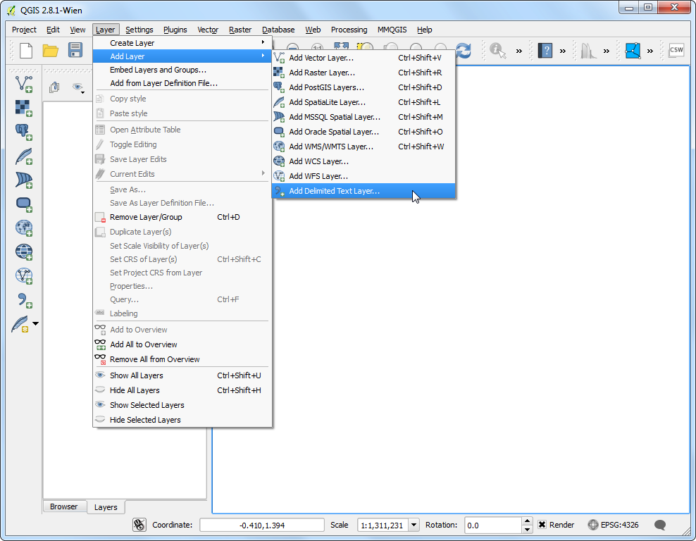
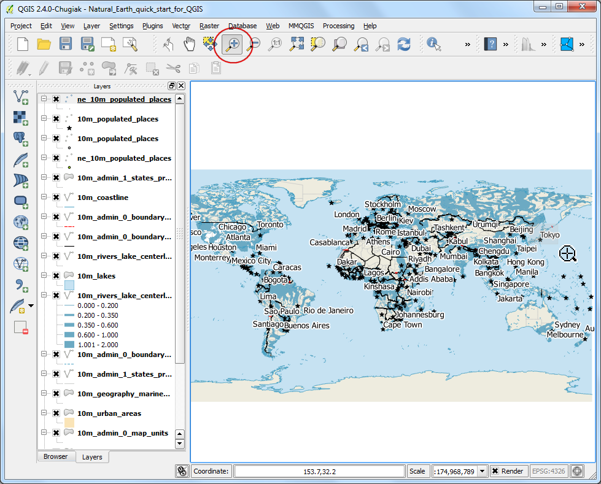
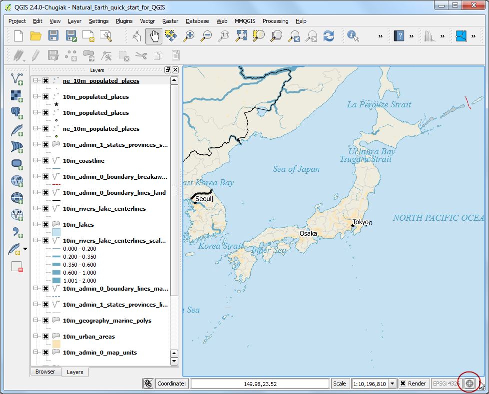
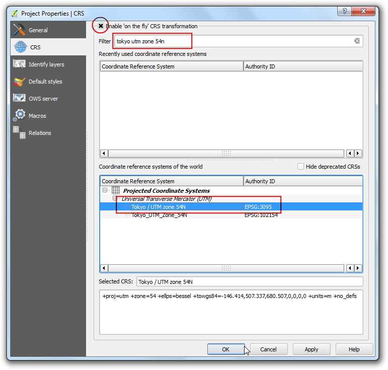

Werkbladen of CSV-bestanden importeren
[ Download PDF A4 Letter ]
Vaak staan de gegevens voor GIS in een tabel of een werkblad. U kunt, als u een lijst met lat/long-coördinaten heeft, deze gegevens ook eenvoudig in uw project van GIS importeren.
Overzicht van de taak
We zullen een tekstbestand met gegevens over een aardbeving importeren in QGIS.
Procedure
Bekijk uw tabulaire gegevensbron. U moet het opslaan als een tekstbestand en u heeft tenminste twee kolommen nodig die de X- en Y-coördinaten bevatten om deze gegevens in QGIS te importeren., Gebruik de functie Opslaan als in uw programma om het op te slaan als een Tab-gescheiden bestand of een Comma Separated Values (CSV)-bestand als u een werkblad heeft. Als u de gegevens eenmaal op deze manier heeft geëxporteerd, kunt u het openen in een tekstbewerker zoals Notepad om de inhoud te bekijken. In het geval van de Significant Earthquake Database, worden de gegevens al aangeleverd als een tekstbestand dat de latitude en longitude van de centra van de aardbevingen bevat, naast andere gerelateerde attributen. U zult zien dat elk veld wordt gescheiden door een TAB.

Open QGIS. Klik op .

Klik, in het dialoogvenster Maak een laag uit een tekstgescheiden bestand, op Bladeren en specificeer het pad naar het tekstbestand dat u heeft gedownload. Selecteer, in het gedeelte Bestandsformaat, Zelfgekozen tekstscheiders en selecteer Tab. Het gedeelte Geometrie definitie zal automatisch worden gevuld als het geschikte velden voor X- en Y-coórdinaten vindt. In ons geval zijn dat LONGITUDE en LATITUDE. U kunt het wijzigen als de import de verkeerde velden selecteert. Klik op OK.
Notitie
Het is eenvoudig om de X- en Y-coördinaten te verwarren. Latitude specificeert de Noord-Zuid-positie van een punt en daarom is het een Y-coördinaat. Overeenkomstig specificeert Longitude de Oost-West-positie van een punt en is het een X-coördinaat.

U zult misschien enkele fouten zien weergegeven in het volgende dialoogvenster. De fouten in dit bestand komen voornamelijk dor het ontbreken van X- of Y-velden. U kunt deze fouten nader bekijken en de problemen in uw bronbestand oplossen. Voor deze handleiding kunt u deze fouten negeren.

Vervolgens zal een Keuze Coordinaten ReferentieSysteem u vragen een coördinaten referentiesysteem te selecteren. Omdat de coördinaten van de aardbevingen in latitudes en longitudes zijn, dient u te selecteren WGS 84. Klik op OK.

U zult nu zien dat de gegevens zullen worden geïmporteerd en weergegeven in het kaartvenster van QGIS.
